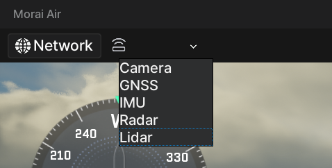
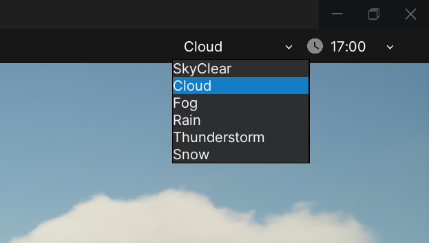
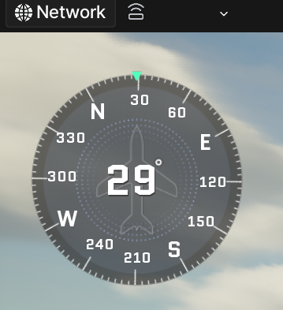
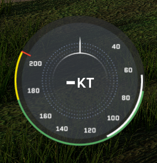
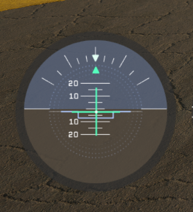
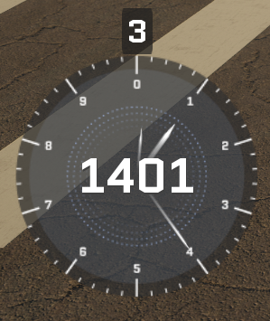
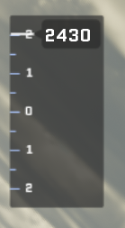
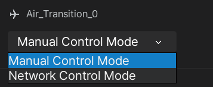
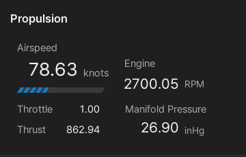
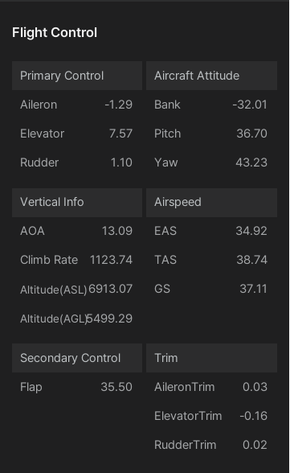

User Interface
This section discribes an overview of the MORAI SIM: Air user interface (UI) and provides the detailed information on each UI component.
UI Overview
The MORAI SIM: Air UI is designed to provide users with easy access to all necessary information and controls, allowing for a realistic and immersive simulation experience.
The entire UI screen of Sim Air is shown below.

Default UI
The default UI appears as soon as you enter the simulater for the first time.
Centered on the map and aircraft selected in the previous step, it consists of the following three parts: 1] Network and Sensor Settings, 2] Environment Settings, and 3] Flight Instruments.

1] Network and Sensor Settings
This menu is located on the left side of the menu at the top of the simulator screen, and provides access to the network and sensor settings, which are the core features provided by the simulator. 
For details on how to use network and sensor functions, see the 'Using MORAI SIM AIR' part.
2] Environment Settings
This menu is located on the right side of the menu at the top of the simulator screen, and provides weather and time of day configurations that determine the background and lighting of the simulator. 
3] Flight Instruments
The flight instruments are located on the left side of the simulator screen, and provide real-time flight information such as the current heading, air speed, attitude, and altitude of the aircraft.
3-1] Heading Indicator
Displays the heading of the aircraft in degrees. 
3-2] Airspeed Indicator
Displays the indicated airspeed in knots. 
3-3] Attitude Indicator
Displays the altitude of the aircraft with pich and bank values as shown below. 
- Pitch: Displays the upper/lower pitch values on the vertical scale in increments of 5 degrees based on a small scale (in the order of '0 - 5 - 10 - 15 - 20 degrees').
- Bank: Displays left/right rolling values from 0 to 60 degrees based on the center 0 point (in the order of '0 - 10 - 20 - 30 - 45 - 60 degrees').
3-4] Altimeter
Displays the altitude of the aircraft with altitude above sea level (ASL) and altitude above ground (AVL) as shown below. 
- ASL: Indicates altitude above sea level(ASL) on a circular scale (unit: feet).
- AVL: Indicates altitude above ground (AVL) in square numbers above the circular scale (unit: feet).
3-5] Vertical Speed Indicator
Displays the vertical speed of the aircraft in feet per minute. 
Aircraft Info UI
The Aircraft Information UI provides the aircraft control mode and current flight status such as airspeed and air pressure, as well as steering inputs for control surfaces and attitude, in detailed numerical values.
If you click the mouse on the Ego aircraft, the Aircraft Information window appears on the right side of the simulator screen as shown below.

1] Aircraft Control Mode
Displays the mode to control the Ego aircraft with Manual Control Mode and Network Control Mode. 
Manual Control Mode is a mode in which the user controls the aircraft with a keyboard or joystick.
The default Manual Control Mode is keyboard control, and the keyboard Q key toggles between keyboard control and joystick control.
To control the aircraft with a joystick, connect the joystick to the simulator via USB and press Q. Then, to control the aircraft with the keyboard, press Q again.
2] Propulsion
Displays engine RPM, air speed (knots), thrust according to throttle control and manifold pressure (inHg) according to aircraft altitude. 
When you press
E in Keyboard Manual Control Mode, the value of Airspeed, Engine RPM, and Throttle (up to 1) increase. In addition, see the Basic Controls section for a detailed description of each key used to operate the aircraft with the keyboard in Manual Control Mode.
3] Flight Control
Displays the flight control surfaces and trim control value, as Primary Control, along with the Attitude, Vertical Info and Airspeed values of the aircraft in detailed numerical values. 
See below for descriptions of abbreviations and terms in Flight Control.
- AOA: Angle of Attack (degrees)
- EAS: Equivalent Airspeed (knots)
- TAS: True Airspeed (knots)
- GS: Ground Speed (knots)
- Climb Rate: Vertical Speed Indicator (feet per minute)
- Trim: Shows the input data of each trim from -1 to +1
See the Basic Controls section for a detailed description of each key for controlling the flight control surfaces and trim of each Aileron, Elevator, Rudder as Primary Control and Flap as Secondary Control.